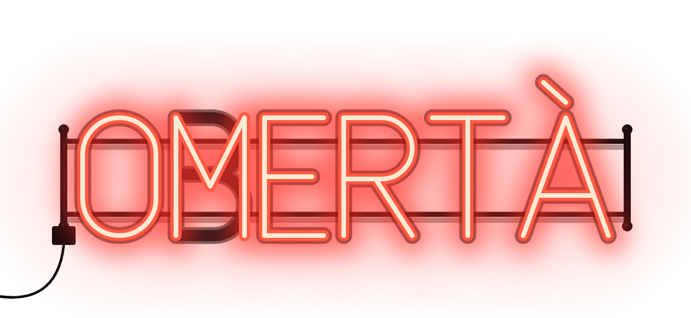
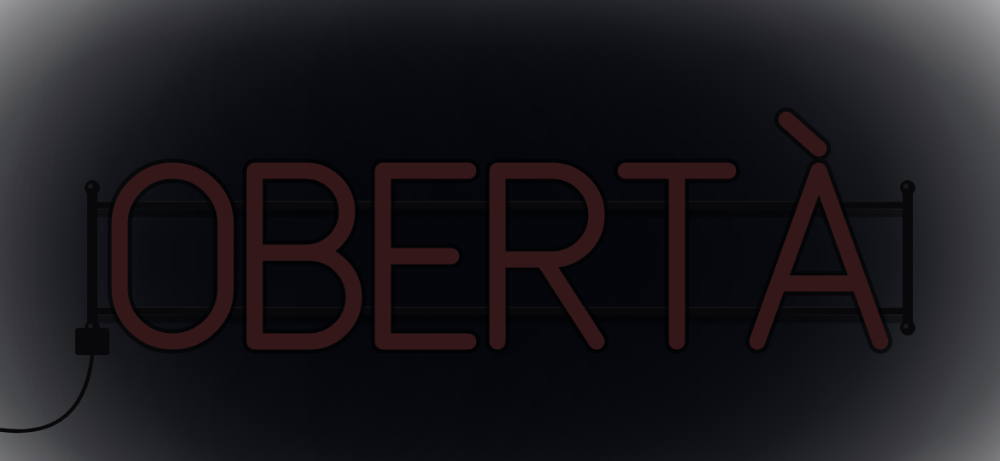
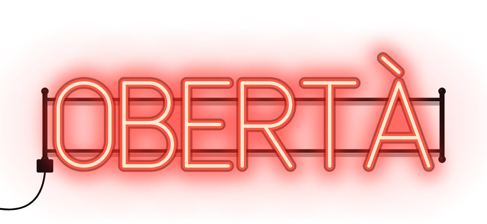
CHI SA,
TACE.
- Presto
- In arrivo
- In arrivo
Un gioco di ruoli segreti. La notte decide, all’alba si contano i morti, poi la piazza parla e vota.
Fai un giro in città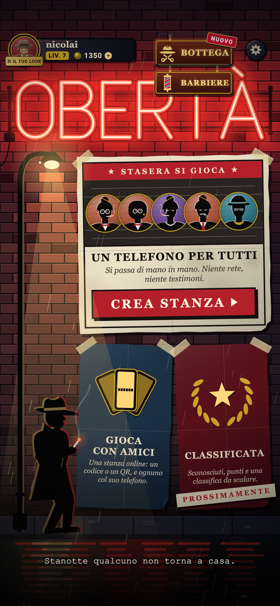
Chi parla
non vede l’alba.
Un giro.
Quattro atti.
Ogni giro va così: la notte, l’alba, la discussione, il voto. Poi si ricomincia, finché una parte resta in piedi. Tocca una fase per vederla.
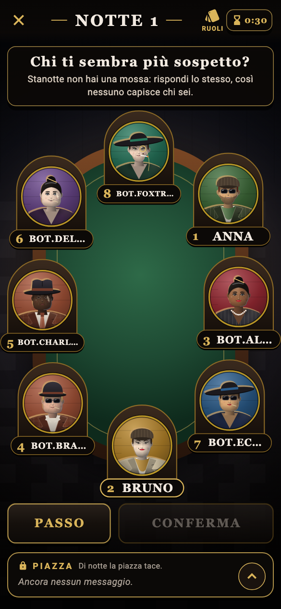
Cala la notte
Ognuno ha il suo compito segreto: la famiglia sceglie chi colpire nella sua chat, gli altri indagano o proteggono.
La chat
è il tavolo.
Al tavolo ognuno ha il suo posto numerato, e nella chat della piazza si parla per numeri: «il 5 non ha detto una parola». Al voto ognuno punta il dito e sul posto di ciascuno compare il numero dei voti che ha preso. Chi ne prende di più viene linciato: sotto il tavolo la striscia del verdetto dice chi era e chi l’ha votato.
E di giorno si parla anche a gesti: tieni premuto il posto di un altro e gli lanci un sigaro acceso, un brindisi, un dito sulle labbra o un occhio che lo tiene d'occhio. In bottega, i gesti più pesanti: la rosa sulla bara, il pesce nel giornale, la testa di cavallo.
Nelle stanze con gli amici si parla anche a voce, premi per parlare: tieni premuto il microfono (al computer, un tasto) e lasci quando hai finito. Di giorno parlano i vivi, di notte solo la famiglia, i morti ascoltano. La voce passa dal vivo e non viene registrata né trascritta.
E se scappa una parolaccia, in chat diventa «obertà».
Scegli il tuo posto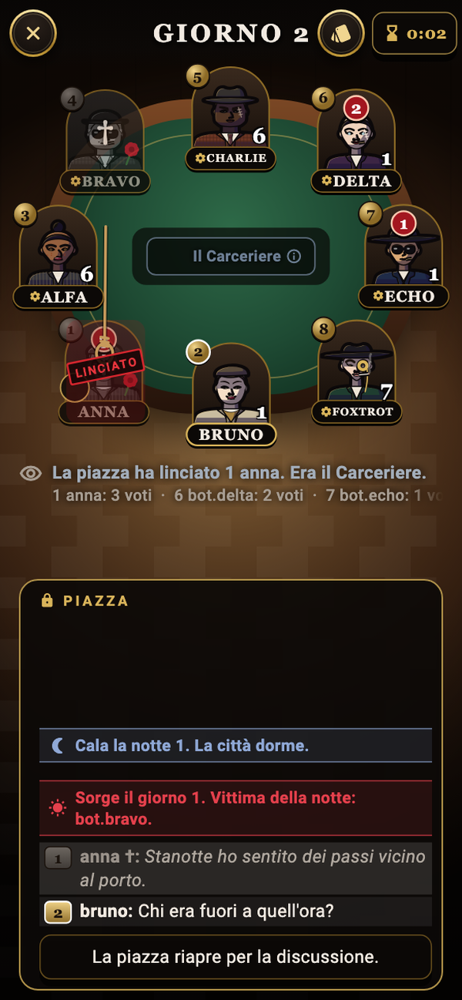
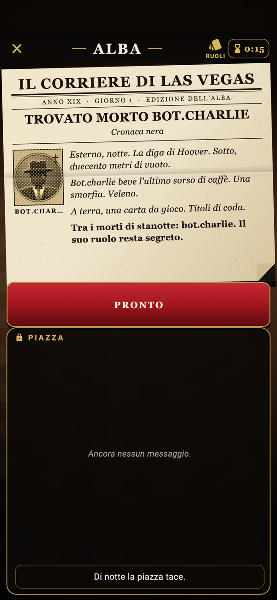
Ogni città
ha una storia.
Ogni partita ha la sua città e il suo anno. All’alba esce il giornale con i morti della notte, ma non dice chi erano davvero. A un telefono solo, il narratore legge la cronaca ad alta voce.
Una carta a testa.
Nessuna innocente.
Ventinove ruoli, ognuno con la sua icona. La famiglia si conosce e uccide di notte: Picciotto, Padrino, Sarto e Compare; con loro gioca la Prostituta, che non sa chi sono e non vota l'agguato. La città indaga, protegge e vota: Onesto, Commissario, Dottore, Cecchino, Cronista, Becchino, Guardaspalle, Reduce, Pregiudicato, Messia, Sindaco, Portinaio, Carceriere, Pacifista, Cupido, Presidente, Artigliere e Tiratore scelto. E poi i solitari, che giocano per sé: Fesso, Piromane, Cacciatore di taglie, Strozzino, Sicario e Capo della setta.
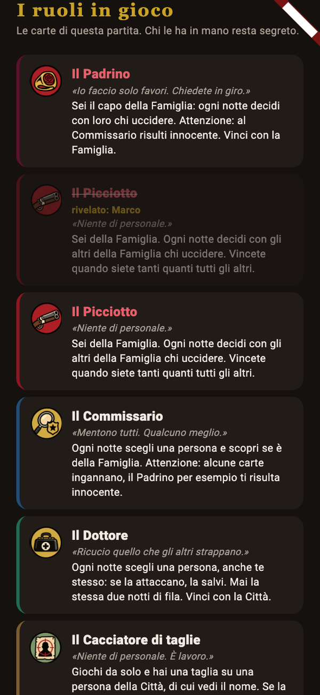
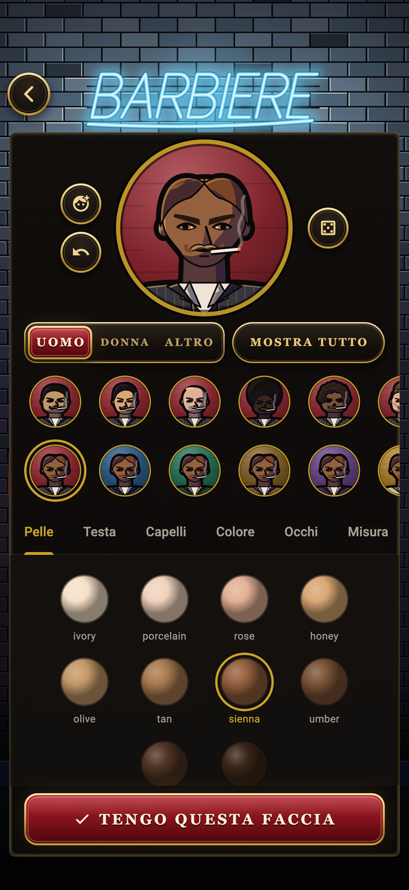
Fatti un nome.
E una faccia.
Dal barbiere scegli viso, capelli e baffi. In bottega scegli il reparto dai medaglioni e giri la ruota d'ottone col pollice: il pezzo sotto la tacca te lo provi subito addosso. Cappelli, completi, la vetrina a tempo e pacchetti interi che costano meno che pezzo per pezzo. Nello scaffale più caro: una scena intera alle spalle (il Vesuvio al tramonto, il caveau della banca), qualcosa in mano (la rivoltella, il cannolo, il gatto del padrino), un effetto sopra la testa, come la nuvoletta della sfiga. Cornici e nomi li provi sulla tua carta, come la vedono gli altri al tavolo. Le monete non si comprano, mai: si guadagnano solo giocando. Ogni partita ne dà qualcuna, la prima vittoria del giorno di più, ogni livello di più ancora. Il tuo fascicolo tiene il conto. Al computer la bottega si allarga: il tuo personaggio sta in piedi su un manichino e ogni pezzo te lo vedi addosso a figura intera.
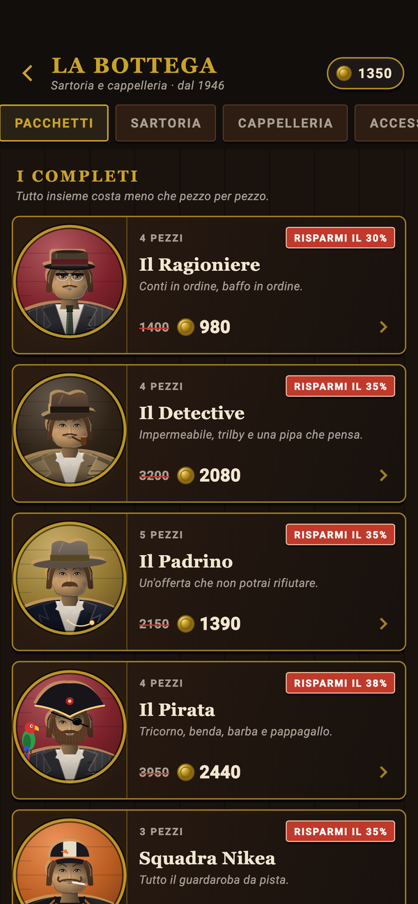
Niente
si compra.
In Obertà non si spende un euro: la bottega non vende monete né pacchetti, e niente dà un vantaggio al tavolo. Le monete si guadagnano solo giocando: ogni partita ne dà qualcuna, la prima vittoria del giorno di più, ogni livello di più ancora.
E poi le missioni: tre del giorno, tre della settimana e gli obiettivi lunghi, da riscuotere con la targa quando li hai fatti. Danno esperienza, monete, rispetto e pezzi che in bottega non si vendono: il berretto da sbirro lo porta solo chi ha vinto cinque partite da Commissario. Un pezzo comune arriva in un paio di partite, un raro in una settimana di gioco tranquillo, un leggendario in un mese o due.
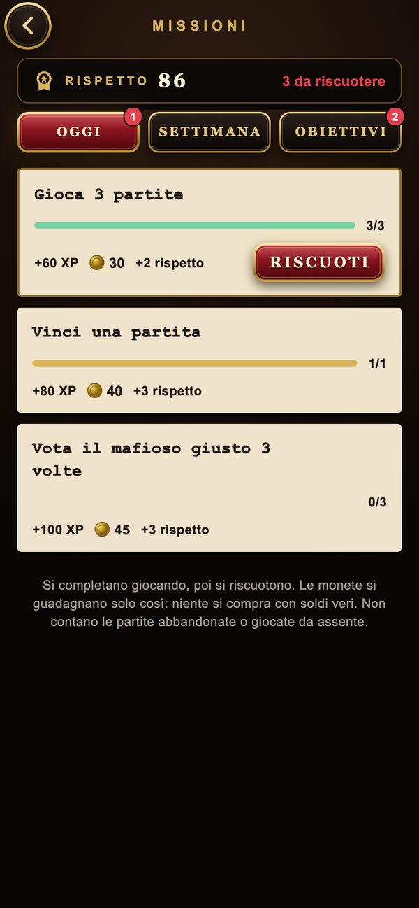
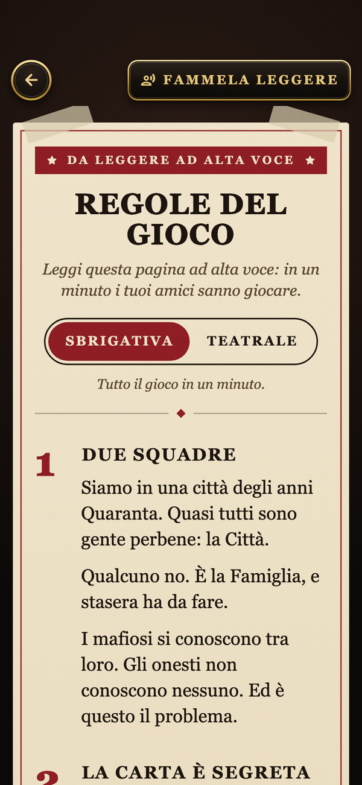
Le regole
in un minuto.
Dal cartello nel vicolo si aprono le regole, scritte per essere lette ad alta voce a chi non ha mai giocato. Due versioni: la sbrigativa, tutto il gioco in un minuto, e la teatrale, una favola nera da recitare a luci basse. Il narratore te le legge, se preferisci ascoltare.
Dodici sconosciuti.
Un tavolo.
Nella classificata si gioca sempre in dodici. Si entra nel retrobottega, si sceglie il tavolo per lingua e si aspetta in una sala dove nessuno ha ancora un nome: chi siede con te lo scopri solo quando si gioca.
Ogni partita sposta il tuo grado. Chi abbandona, o resta fermo senza giocare, non prende niente: né punti né monete, anche se la sua squadra vince.
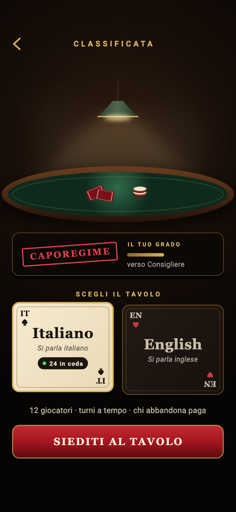
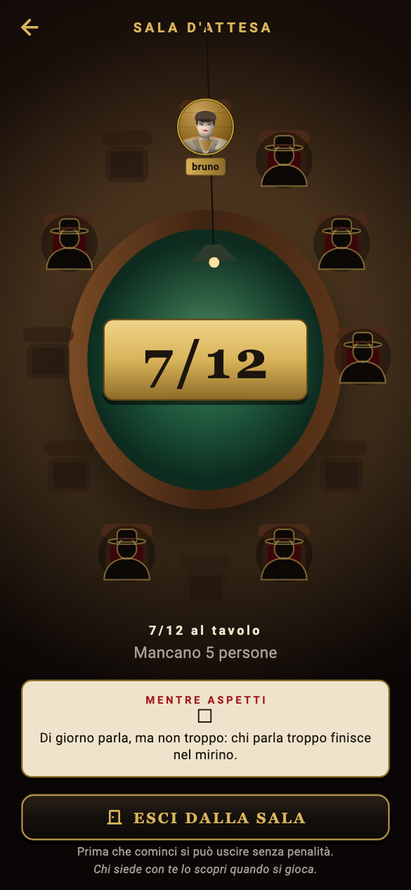
Anche su
PC e Mac.
Su PC e Mac il tavolo si allarga: i giocatori attorno al panno verde, a destra i ruoli in gioco e la chat della piazza, sempre aperti. Al computer si gioca online: classificata e stanze con gli amici.
Il telefono passato di mano resta una cosa da tavolo vero: su desktop non c’è.
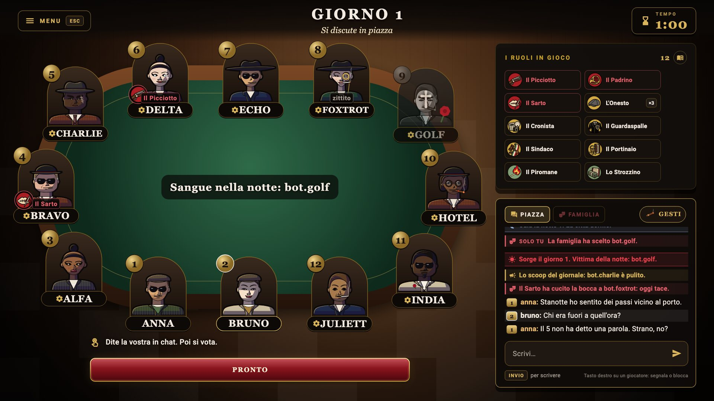
Stessa città.
Il tuo modo.
Un telefono per tutti.
Da 4 a 12 giocatori attorno al tavolo, anche senza rete. Lo stesso tavolo dei posti numerati dell’online: ci si passa il telefono dietro una tenda per i ruoli e le scelte segrete, e a ogni passaggio i posti si rimescolano, così nessuno capisce chi hai scelto dal dito. Di giorno si vota uno alla volta, a viso aperto. Il narratore guida la notte a voce. Solo su telefono.
Gioca con amici.
Da 4 a 12 giocatori. Crea una stanza e condividi il codice o il QR: ciascuno gioca dal suo schermo, telefono o computer. Di giorno si discute nella chat della piazza, con i posti numerati, e a voce, premi per parlare; di notte la famiglia ha una chat e una voce tutte sue.
La classificata.
Sempre in dodici, tutti sconosciuti. Si aspetta il tavolo pieno in una sala senza nomi e si gioca per il grado. Chi abbandona o resta fermo non prende premi.
Un account, un dispositivo alla volta: se entri da un altro, il primo si ferma.
Dove si giocaDove
si gioca.
Telefono o computer, il quartiere è lo stesso. Obertà non è ancora uscita: ecco dove arriva.
-
iPhone
Un telefono per tutti, stanze con gli amici e classificata.
Presto su App Store -
Android
Gli stessi tavoli, dal tuo telefono Android.
In arrivo -
PC e Mac
Classificata e stanze con gli amici, con l’accesso di Steam.
In arrivo su Steam
Apple e il logo Apple sono marchi di Apple Inc., registrati negli Stati Uniti e in altri Paesi. App Store è un marchio di servizio di Apple Inc. Google Play e il logo di Google Play sono marchi di Google LLC. ©2026 Valve Corporation. Steam e il logo di Steam sono marchi e/o marchi registrati di Valve Corporation negli Stati Uniti e/o in altri Paesi.
Torna all’insegna